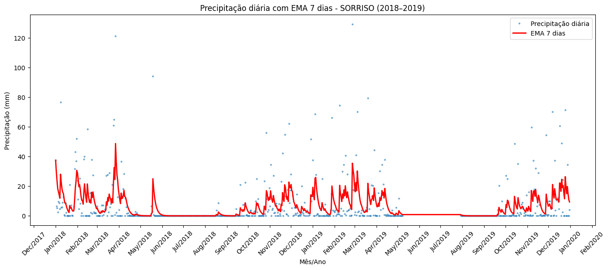
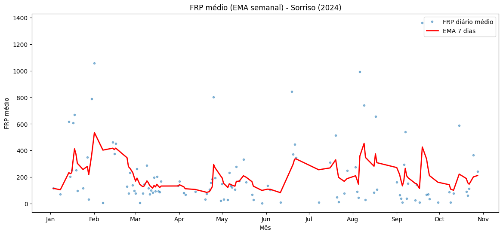
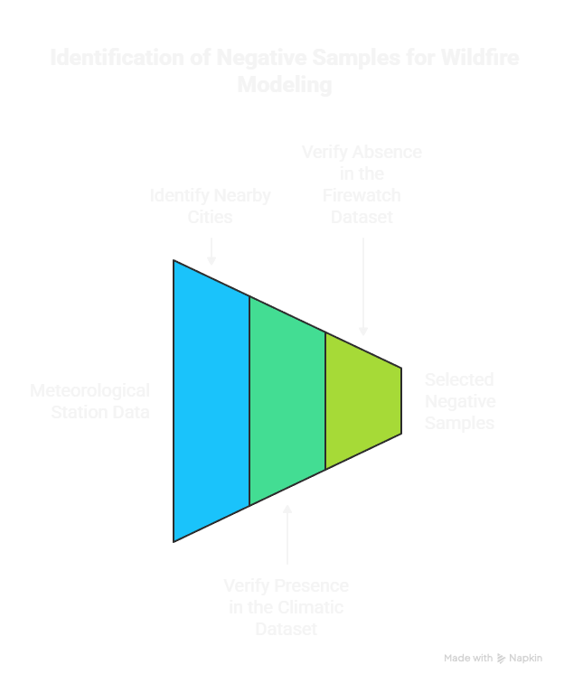
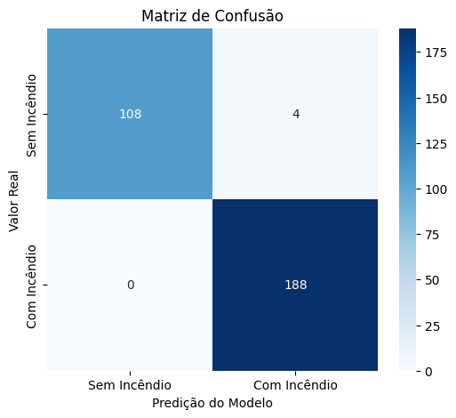
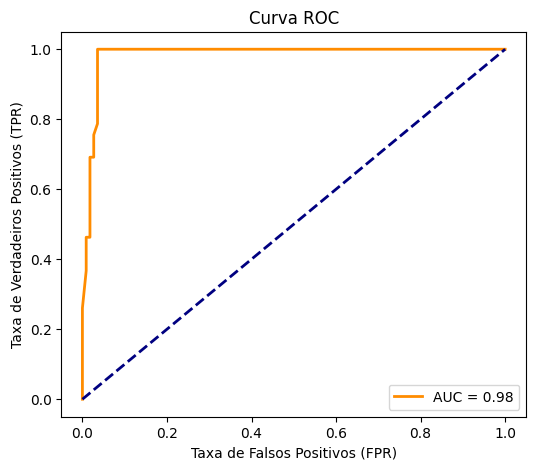

Wildfire Prediction in Brazil's Central-West Region
Project Summary
This project develops a machine learning–based approach to predict wildfire occurrences in Brazil’s Central-West region by integrating climatic, spatial, and socioeconomic data. The study combines geospatial analysis with supervised learning techniques to identify key drivers of wildfire risk.
- Problem: Increasing wildfire occurrences in regions with intensive agricultural activity.
- Data: Fire Radiative Power (FRP), climatic variables, and municipal socioeconomic indicators.
- Approach: End-to-end data pipeline including exploratory data analysis (EDA), feature engineering, and SVM-based modeling.
- Key Insight: Prolonged dry periods show a strong correlation with increased wildfire activity, while municipalities with higher Gross Value Added (GVA) exhibit elevated fire occurrences.
- Result: Predictive model achieving high performance (F1-score ≈ 0.99).
The workflow integrates data acquisition, exploratory data analysis (EDA), climate data processing, data preprocessing, and predictive modeling to analyze the relationship between climatic conditions, socioeconomic activity, and wildfire dynamics.
The analytical pipeline below provides a high-level overview of the project architecture, illustrating how heterogeneous data sources are transformed into a unified dataset and used for model training and evaluation.
Figure 1 – End-to-end pipeline illustrating data acquisition, exploratory analysis, climate data processing, preprocessing, and machine learning modeling stages.
Exploratory Data Analysis (EDA)
The first part of the project involved exploratory data analysis (EDA) to understand the spatial distribution of wildfire occurrences and their relationship with socioeconomic factors. I created several interactive maps to visualize key patterns in the data. The interactive map below highlights municipalities with the highest agricultural gross value added (GVA), revealing strong spatial concentration of economic activity in specific regions, which are relevant for wildfire risk modeling.
Agricultural Economic Concentration — Top 10 Municipalities by GVA
Top 10 Brazilian municipalities with the highest agricultural Gross Value Added (GVA) between 2012 and 2022.
Top 100 Municipalities by Fire Radiative Power (FRP)
After identifying economically significant municipalities, I analyzed wildfire occurrences using Fire Radiative Power (FRP) data. The following interactive map visualizes the top 100 municipalities with the highest FRP values.Wildfire Activity Concentration — Top 100 Municipalities by FRP
Crossed Data Analysis: FRP and GVA
To explore the relationship between wildfire occurrences and economic activity, I created a crossed data map combining Fire Radiative Power (FRP) with agricultural Gross Value Added (GVA). This visualization helps identify spatial correlations between fire events and economic factors.- Blue pins: Central-West region
- Pink pins: South region
- Orange pins: Northeast region
- Green pins: North region
- Red pins: Southeast region
Crossed Data Analysis — Fire Radiative Power (FRP) vs. Agricultural Gross Value Added (GVA)
The visualization reveals that several municipalities with high wildfire occurrences also exhibit significant agricultural economic activity. Notably, Brazil’s Central-West region shows a strong spatial overlap between high Fire Radiative Power (FRP) and elevated agricultural Gross Value Added (GVA), reinforcing the hypothesis that intensive agricultural production is closely associated with increased wildfire incidence. Based on these findings, the Central-West region was selected for further analysis and predictive modeling.
Selecting the Region of Interest
Based on the insights obtained from the exploratory data analysis (EDA), Brazil’s Central-West region was strategically selected as the focus area for the wildfire predictive modeling. The region presents a strong spatial association between elevated Fire Radiative Power (FRP) levels and intense agricultural economic activity, positioning it as a highly relevant case study for analyzing wildfire behavior under climatic and socioeconomic influences.
To support this decision, the 100 municipalities most affected by FRP within the Central-West were identified, and a geographic polygon was defined to delimit the area of interest. This spatial boundary, illustrated in the map below, served as the basis for data filtering, feature aggregation, and subsequent modeling stages.
Geographic Delimitation of Brazil’s Central-West Region
Climate Data Processing
To strengthen the wildfire predictive modeling, climatic data were incorporated into the analysis. Key meteorological variables — including temperature, precipitation, humidity, and wind speed — were obtained from meteorological stations and made available through the Kaggle dataset Hourly Weather Surface Brazil Southeast Region . This dataset provides high-resolution hourly measurements across multiple locations in Brazil since 2004.
In contrast, the Firewatch dataset contains daily-level information, primarily represented by the median daily precipitation values per municipality. The discrepancy in temporal resolution between the two datasets introduced a significant data integration challenge, requiring the transformation of hourly climatic records into daily aggregated metrics before the datasets could be merged.
| Aspect | Climate Dataset (Kaggle) | Firewatch Dataset |
|---|---|---|
| Temporal Resolution | Hourly measurements | Daily aggregates |
| Precipitation Metric | Hourly precipitation values | Daily median precipitation |
| Spatial Granularity | Meteorological stations | Municipality-level data |
| Data Processing Required | Temporal aggregation (hourly → daily) | Alignment with climatic aggregates |
Due to these structural differences, a dedicated preprocessing step was required to compute daily average climatic indicators from the hourly observations. This step was critical to ensure temporal consistency and accurate feature alignment before merging the climatic and wildfire datasets, ultimately enabling reliable model training.
Central-West Region Analysis
After processing and integrating the climatic datasets, a targeted analysis was conducted on Brazil’s Central-West region. The results indicate that several municipalities are subject to prolonged dry periods, which are strongly associated with higher wildfire occurrence rates. These findings reinforce the relevance of climatic conditions as a key driver of wildfire dynamics in the region.
The map below highlights the 15 municipalities most affected by extended drought conditions, providing a clear spatial representation of areas with elevated wildfire risk due to sustained precipitation deficits.
Prolonged Drought Exposure — Top 15 Municipalities

After analyzing the meteorological substations and the climatic datasets, Sorriso emerged as the only municipality consistently present in both the climate and Firewatch datasets, making it an ideal candidate for a more detailed case-specific analysis. For Sorriso, daily precipitation levels were visualized alongside a 7-day Exponential Moving Average (EMA), as shown below.
Daily Precipitation with 7-Day EMA — Sorriso Municipality (2018-2019)
Note: Climatic trends were analyzed over multiple historical periods, while FRP data from 2024 was used to illustrate recent wildfire activity patterns.
Next, the daily Fire Radiative Power (FRP) values for Sorriso were analyzed to visualize wildfire activity over time. A clear peak in fire occurrences is observed between February and March, coinciding with a period of reduced precipitation. Following the onset of the rainy season in mid-March, fire activity declines sharply, reinforcing the strong influence of climatic conditions on wildfire dynamics in the region.
Fire Radiative Power (FRP) — Sorriso Municipality (2024)
Defining Negative Samples (Feature Engineering)
In the feature engineering phase, a critical step involved defining negative samples for the predictive modeling task. Negative samples represent days without wildfire occurrences, essential for training a balanced classification model. To accurately identify these instances, Cities were selected based on their proximity to meteorological stations by computing the nearest municipality using latitude and longitude coordinates. If the city was present in the climate dataset, and not in firewatch, it was selected as a negative sample, as exemplified below:
Negative Sample Definition Example — Sorriso Municipality
This systematic approach ensured that the negative samples accurately reflected days without fire activity, providing a robust foundation for training the machine learning model to distinguish between fire and non-fire days effectively.
One-Hot Encoding of Biome Information
To enhance the model’s ability to capture ecological variations influencing wildfire occurrences,
one-hot encoding was applied to the biom categorical variable. This transformation
converted each biome category into a binary feature, enabling the model to learn distinct patterns
associated with different ecological zones. By representing biomes as separate binary indicators,
the model was able to more effectively incorporate ecological context into wildfire prediction.
SVM Modeling and Evaluation
For the predictive modeling task, the Support Vector Machine (SVM) algorithm was selected due to its robust performance in high-dimensional feature spaces and its effectiveness in binary classification problems. The model was trained using a comprehensive feature set that combined climatic variables with engineered features, including negative samples and one-hot encoded biome information.
The evaluation results demonstrate strong predictive performance, with the model achieving an F1-score of approximately 0.99. Performance was assessed using multiple evaluation tools, including the confusion matrix, ROC curve, and a comparative F1-score table, which together highlight the model’s ability to accurately distinguish between fire and non-fire events while maintaining a balanced trade-off between precision and recall.
| Class | Precision | Recall | F1-score | Support |
|---|---|---|---|---|
| No Wildfire | 1.00 | 0.96 | 0.98 | 112 |
| Wildfire | 0.98 | 1.00 | 0.99 | 188 |
Confusion Matrix — SVM Model Performance
The model demonstrates balanced performance across classes, with high recall for wildfire events, indicating strong sensitivity in identifying fire occurrences.
The ROC curve indicates excellent discriminative ability, with an AUC close to 1, reflecting the model’s effectiveness in distinguishing between classes.
ROC Curve — SVM Model Performance Key Technical Takeaways
- Temporal aggregation was critical for aligning heterogeneous climate and wildfire datasets.
- Negative sample definition significantly improved class balance and model stability.
- Lagged precipitation patterns emerged as strong predictors of wildfire occurrence.
Conclusion
This project successfully developed a machine learning–based approach to predict wildfire occurrences in Brazil’s Central-West region by integrating climatic, spatial, and socioeconomic data. The SVM model demonstrated strong predictive performance, achieving an F1-score of approximately 0.99, indicating its effectiveness in distinguishing between fire and non-fire events. Key insights from the analysis highlighted the significant influence of prolonged dry periods on wildfire activity, as well as the correlation between high agricultural economic activity and increased fire occurrences. These findings underscore the importance of considering both climatic and socioeconomic factors in wildfire risk modeling. Future work could explore the incorporation of additional data sources, such as satellite imagery and land-use patterns, to further enhance model accuracy and provide more comprehensive wildfire risk assessments. Overall, this study contributes valuable insights into wildfire dynamics in Brazil and offers a robust framework for predictive modeling in similar contexts.